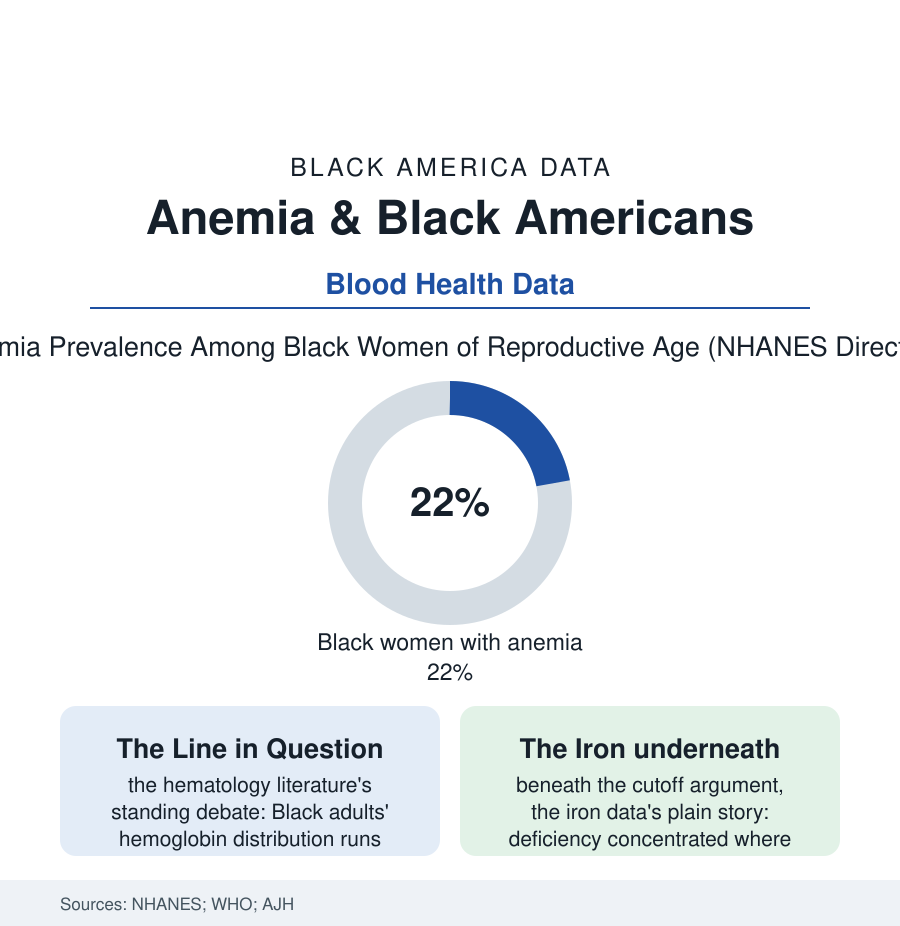

Black Public Health
The Blood Count: Anemia, Iron, and the Hemoglobin Line
Anemia is diagnosed against a line drawn through a distribution that differs by ancestry — and the argument over where the line belongs is one of laboratory medicine's oldest. The anemia file.

One in five Black women of reproductive age carries an anemia diagnosis in the federal survey data — a figure that launches a thousand iron prescriptions and a hundred thousand repeat blood draws. Inside the hematology literature, that number has been argued over for fifty years, because the blood count's threshold crosses a distribution that ancestry shifts — and both errors, over-calling and under-calling, have patients attached. This article reads the anemia file.
The Distribution and the Debate
The laboratory fact at the file's center is old and uncontested: hemoglobin concentrations in healthy Black adults run lower — on the order of half a gram to a gram per deciliter across the distribution — than in white adults of the same age, sex, iron status, and health in NHANES and the cohort studies, a difference partly genetic in the research's accounting (the alpha-thalassemia trait's frequency in African ancestry, the hemoglobin variants' file) and not explained away by the iron and inflammation rows the surveys can adjust for. The diagnostic consequence is the debate: the standard cutoffs, drawn from predominantly European reference populations generations ago, classify the Black distribution's lower tail as diseased at several times the white rate — minting, the critics argue, a diagnosis epidemic among the healthy (with its cascade: the workups, the iron infusions, the colonoscopies ordered after a number), while the defenders answer in the outcome data (the lower hemoglobin predicting, within the Black population too, the fatigue, the pregnancy complications, the heart-failure courses of the clinical files — a marker that behaves like disease even where its distribution is shifted). The field's current position, legible in the guideline revisions' slow movement, is toward the uncomfortable middle the evidence supports: the trait-and-nutrition workup first (the ferritin, the variant screen), the population's own reference data for the borderline, the symptom rather than the spreadsheet as the treatment trigger — a position every clinician in the blood file's audience recognizes as harder than a line, which is why lines persist. Meanwhile the sickle file's neighbor conditions — the trait carriers' counts, the G6PD rows — remind the reader that in this population the red cell has more ways to be unusual, most of them benign, all of them miscible into a single miscoded problem list.
The Iron Ledger Beneath the Argument
Whatever the cutoff's verdict, the iron data beneath it tell a story with no debate attached: iron deficiency — the depleted stores the ferritin measures before the hemoglobin falls — concentrates in the Black population's predictable intersections (the reproductive-age woman's ledger of the fibroid file's blood loss and the pregnancy file's demands against the diet file's iron rows, the adolescent's growth, the blood donor's generosity — the donation system's data showing Black donors' iron stores strained by the very giving the sickle file's matched-blood appeals require), and its consequences run through the files that touch cognition and work (the fatigue literature's iron chapters, the restless-legs and pica rows, the pregnancy outcomes the maternal file prices). The treatment-access rows repeat the section's grammar: the intravenous iron era's infusions flowing unevenly in the claims data, the oral iron's tolerability deciding adherence in the pharmacy records, the WIC and school-lunch iron of the food programs standing as the deficiency's mass counterweight in the child data. And the file's last row belongs to the elders: anemia in the Black senior data rising with the kidney file's and the inflammation file's chronic burdens, its presence in the hospital record a mortality marker the geriatrics literature reads grimly in every population — the one place the cutoff debate goes quiet, because at the low end of an old person's count, everybody agrees it matters.
Reading the Anemia Data
The blood count is the laboratory's first sentence about a patient, and this file is about the grammar it is written in: a threshold is a decision disguised as a measurement, and its racial history — like the kidney equation's and the spirometer's before it — is being re-argued in the open, with data, toward a medicine that knows whose blood it is reading. NHANES publishes the distributions. Where the line falls through them remains, properly, an argument.
More in Black Public Health
Hypertension Among Black Adults: Prevalence, Control, and Consequences
About 55 percent of Black adults have hypertension — the highest rate of any U.S. group. Prevalence, onset, control, and the stroke, heart, and kidney consequences in the data.
Diabetes Among Black Adults: Prevalence and Complications
Nearly one in five Black adults has diabetes, diagnosed or undiagnosed — and its complications fall with particular weight. The CDC data on prevalence, control, and outcomes.
Black Life Expectancy: The Gap at Birth and Its Causes
Black life expectancy at birth is about 73 years, roughly five years below the national figure — the summary measure of every health gap in this section. The CDC data.
Source: National Health and Nutrition Examination Survey (NHANES); World Health Organization anemia data; American Journal of Hematology; Centers for Disease Control and Prevention.